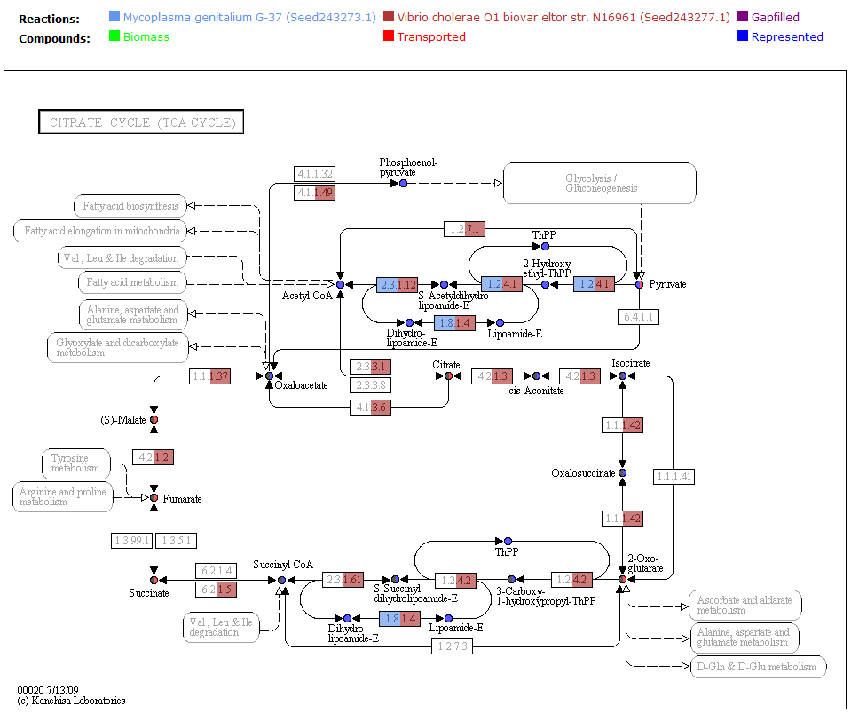
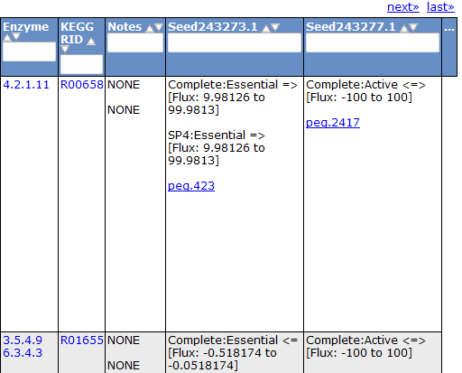

Select Multiple Models
In order to compare models, you must first select two or more models to begin comparison.
If you are already viewing a model and select a new model, the two models will show up side-by-side.
To do this, simply click on any model link that can be found throughout the Model SEED page, either in
the 'Selected Models/FBA' tab, the 'Model Statistics/Select' tab, or the 'User models' tab.
Once you have selected multiple models, you will be greeted with a broad overview of the models.

top
Viewing the Maps
The KEGG maps are used to help compare models by overlaying different colors according to
the status of the reactions and compounds in each model. This allows you to quickly see
which reactions and compounds belong to both models, and which do not. The legend
tells you the color scheme so you can see which model is what color.

top
Comparing Reactions
To futher view the differences between models, you can compare the reactions by clicking
on the 'Reactions' tab. The right columns of the table show the status of each reaction for
the currently selected models.

A similar comparison feature can be found in the compound tab, biomass tab, and gene tab.
top